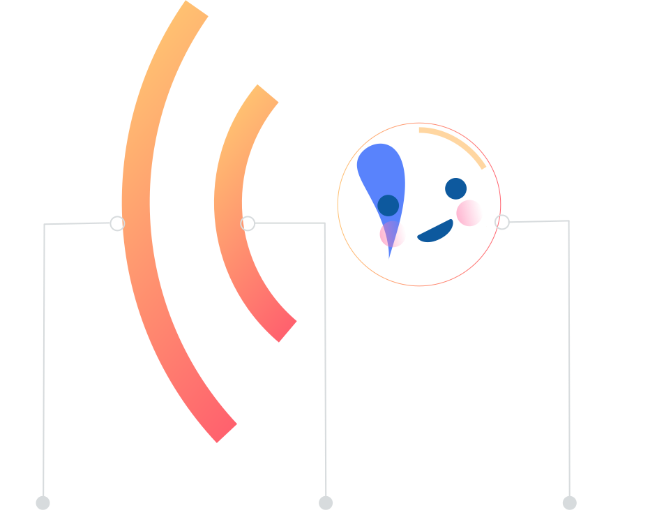
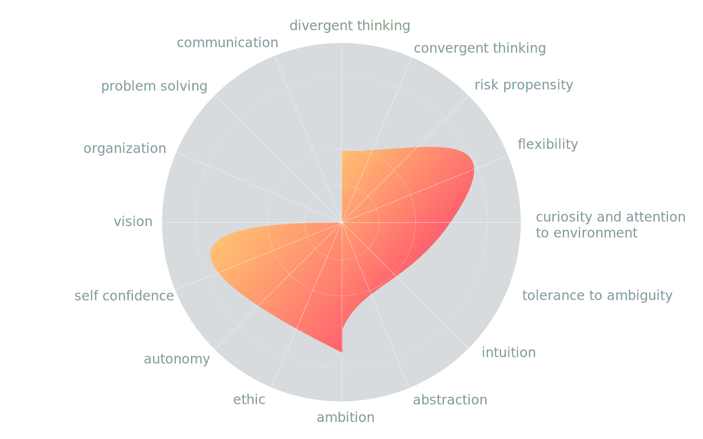

Can creativity be learned?
The answer is yes.
We are naturally creative and as we grow up we learn to be uncreative. Creativity is a skill that can be developed and a process that can be managed.
Creativity is a set of skills, dispositions and capacities that can be developed : learning to be creative is akin to learning a sport
Being Creative About Creativity

Psychology
Conversational UI
Artificial Intelligence
Creativity is about connecting dots. We basically decided to connect psychological, machine learning and conversational ui dots in order to create mēkā.
Creative process and multivariate factors
Over half a century of empirical research on intellectual functioning has uncovered a vast array of factors impacting creativity. Creativity is the product of cognitive, conative, emotional and environmental factors.
We believe that creativity isn’t just the domain for artists. We are commited to help people discovering who they truly are and unlock their creative potential.
We created mēkā embracing this multivariate approach of creativity. Knowledge is part of the creative factors. Acquisition of new knowledge in a particular field may affect other factors such as risk-taking or motivation. Creative profiles vary according to each specific task and creative domain. That's why we quickly devided to create domain-specific tests.
Only a test encompassing all these facets would help us define creativity. The potential is assessed by measuring each factor involved in creativity activities. Creative profile varies according to each specific task and creative domain. Identification of a creative profile then requires comparing the profile of an individual with the target profile of the components needed for creativity for a particular task.
Our long-term goal is to create a user-mēkā symbiosis — using ai to boost the creativity of users and have these cooperative, fun collaborations.
Our test aim to encompass most of the personality factors impacting creativity

The hiring tool for a changing market
Creative industries face an information gap on skills : there is little evidence on the skills required by creative talent.
We aim to help HR consultancy, creative agencies or any company looking for creative profiles.
The profesional version of mēkā (in progress) is designed to evaluate creativity and help you hiring creative profile for your company.
Mēkā pro allows you to setup creative profiles for various areas including multi-disciplinary profiles (merging in-demand skills along with technical/specialist skills) keeping your profiles and canditates in one place. You can also save time using our first-filter creative customizable form.
Psychometric tests and other techniques included in mēkā can indicate people who are more predisposed to come up with new ideas and make connections. It basically shows who's comfortable in that sort of role.
Tests can also identify people who help other people feel creative, and those who are likely to be threatened by creative individuals. To recognize these differences is crucial in setting up any creative team and we are happy to help you in this process.
Overall, mēkā pro will help us make our commitment reality. Help us promoving creativity in the world for social change : part of the fee paid by your company for mēkā pro goes to creative education foundations worldwide and non-profit mēkā projects.
Impact of creativity on society
Creativity allows us to continue to grow and develop as a society - promoving creativity in the world would be a catalyst for social change.
About us
We are 3 individuals working in the creative industry who decided to join knowledge and skills in order to create mēkā.